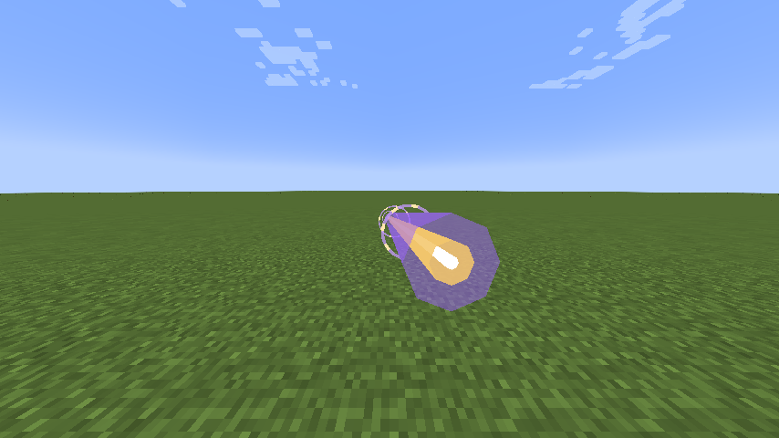
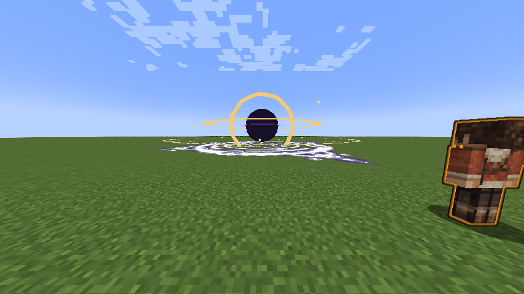

Aion, God of Causality is a Godly skill built around spatial precision, battlefield control and a personal HP/SHP rewind with a safe recorded position. Its active arts use magicules and space elemental damage. Its power grows with mastery, without EP damage scaling.
Usage
Passive
[Passive - Toggle] — Unbroken Continuum
Adds 45 physical barrier, 45 magic barrier, 0.75 knockback resistance and 1,200 native Multilayer Barrier capacity. The latter uses Tensura’s existing barrier HUD. Its owned multilayer contribution rearms after 10 seconds without an incoming hit, checked on the next upkeep tick. Upkeep does not repair it during combat. Turning the passive off removes its own contributions while preserving other barrier modifiers.
Enabling costs the first 180 magicules, then 180 magicules each second. It turns off when unfunded or suppressed. It emits no constant passive particle cloud.
While active, the caster deals 35% additional damage to eligible mobs and players that do not own a Godly skill. Owning a skill in the addon’s Godly tag counts even when that target has its passive off. The bonus applies to melee, projectiles and skills through native damage calculation.
The caster’s attacks also degrade native Resistance and Nullification skills to no protection, and ignore native elemental/magic resistance attributes. This applies to the caster’s attacks only; learned skills, mastery and toggles are preserved. Turning the passive off restores their normal effectiveness. Armor, barriers, other skill defenses, authority and PvP protection continue to apply.
Eligible enemies within 16 blocks suffer causal time dilation. Movement reduction increases linearly from 15% at the edge toward 80% at the caster. It uses a temporary movement modifier, has no ambient particle cloud, does not stack between Aion users and expires within half a second after leaving the aura or the caster stopping it.
Active
| Mode | Magicule cost | Cooldown | Range / area | Base damage |
|---|---|---|---|---|
| Worldline Sever | 800 to start; 400 per additional 0.5 seconds | 4 seconds after channel ends | 80-block beam, up to 8 targets per pulse, 6-second maximum | 220 per 0.5 seconds |
| Event Horizon | 6,000 | 16 seconds | 64-block cursor placement; 24-block pull, 10-block damage radius; 10 seconds | 120 per second |
| Causal Reversal | 2,400 | 1 second to recast; 25 seconds after return or expiry | Personal checkpoint, 20-second window | — |
| Genesis Verdict | 15,000 | 45 seconds | 64-block placement; 12 / 14-block radius | 700 + 700 + 1,400 / 2,100 |
[Active - Mode 1] — Worldline Sever
Hold the assigned skill key to channel a gold-white spatial beam that follows the current crosshair direction. It pierces up to eight eligible enemies per pulse and stops at blocks. Damage pulses every half second; the opening pulse costs 800 magicules and each additional pulse costs 400. A full six-second channel has twelve pulses and costs 5,200 magicules before native cost modifiers.
Releasing the key, exhausting magicules, suppression, death, dimension changes or reaching six seconds ends the beam and starts its four-second cooldown. The channel cannot keep damaging after release. Each pulse rechecks friendly/PvP protection.
[Active - Mode 2] — Event Horizon
Place a gravity domain with a dark core, counter-rotating accretion bands and Tensura’s native Gravity magic circle. Enemies within 24 blocks are pulled toward the core; only enemies within the 10-block inner radius take space damage each second. A faint outer ring marks the pull range, while the bright inner circle marks the damage zone. Knockback resistance reduces the pull. Hostile or unowned projectiles lose 35% velocity per tick and curve toward the center; the caster’s own and allied projectiles are preserved.
[Active - Mode 3] — Causal Reversal
The first press places a visible clockwork checkpoint and records position, HP and SHP. Press again after the one-second recast delay, within twenty seconds, to return and recover HP/SHP toward their recorded values, limited by current caps. Both casts cost magicules. Native Recovery circle effects and spatial bursts mark the return.
Reversal does not restore aura, magicules, items, cooldowns, buffs or lost lives. The destination must remain unobstructed, inside the world border and in the same dimension. An unsafe return charges no magicules. Returning or expiration applies the full twenty-five-second cooldown. Death, relogging and dimension changes clear the checkpoint.
[Active - Mode 4] — Genesis Verdict
Place a warned spatial catastrophe at the cursor within 64 blocks. After one second of warning, three pulses strike at one-second intervals: 700, 700 and 1,400 base damage within twelve blocks.
If your Event Horizon is active, Verdict consumes it, uses its existing center and expands to fourteen blocks, with the final strike raised to 2,100. The old Horizon visual is removed when consumed. A contracting cage, rising spatial beams, native Space circle and expanding fracture fronts telegraph the strikes. Enemies can leave the area.
Damage and interaction
The damage multiplier is 1 + 0.5 × mastery fraction, capped at 1.5×. All damaging modes use native tensura:space_elemental damage and use native damage calculation. Unbroken Continuum adds its stated resistance degradation and non-Godly bonus; other defenses, authority and PvP rules still apply. Team and owner protection follows the addon’s existing target checks. No mode destroys blocks or scales damage with EP.
Obtaining
Use Skills → Godly → Ascension to replace one mastered Myths Ultimate after reaching the awakening and EP requirements. Equip Aion from the new Godly category in Tensura’s normal ability menu.
Gallery


